1.1.19.1. 개요
모터용 전원은 전자접촉기(magnetic contactor) MC1, MC2의 개폐에 따라 앰프(AMP)에 공급됩니다. MC1 또는 MC2의 상태는 메인(MAIN)에 의해 조건에 따라 감시되고 있으며 비정상적인 동작을 할 경우에 E0127(MSHP동작이상) 또는 E0140(MSPR동작이상)이 발생합니다.
(1) E0140 (MSPR동작이상)
메인(MAIN)이 판단하지 못하는 어떠한 원인에 의하여 전자접촉기 MC1이,
① ON시도 중에 ON이 되지 않거나,
② ON유지 중에 OFF될 경우 발생합니다.
(2) E0127 (MSHP 동작이상)
메인(MAIN)이 판단하지 못하는 어떠한 원인에 의하여 전자접촉기 MC2가,
① ON시도 중에 ON되지 않거나,
② ON유지 중에 OFF될 경우 발생합니다.
MC1 또는 MC2가 ON되기 위해서는 여러 가지 조건이 만족되어야 하며, 이미 ON이 되었다고 해도 여러 가지 원인에 의해 OFF될 수 있습니다. 안전신호와 같이 감시기능이 제공되는 경우에는 전자접촉기의 동작이상에 대한 원인을 메인(MAIN)이 판단할 수 있으며, 적절한 에러메시지를 표시할 수 있습니다. 그러나 메인이 전자접촉기의 동작이상에 대한 원인을 판단하지 못할 경우에는 여러 가지 점검이 필요합니다.
1.1.19.2. 원인 및 점검방법
|
(1) 명령계통의 고장 n 메인으로부터의 데이터 수신에 이상발생 n CPUERR 또는 EXOUT신호 발생 또는 해당 라인의 결함 n 구형 시스템IO보드(BD531V10)를 원격모드에서 사용 n 안전신호계통에 문제가 있는 경우 n 안전관련장치 배선오류에 의한 에러발생 n 시스템보드의 고장
(2) 감시계통의 고장 n 케이블링(전선, 커넥터 등) 고장 n 전장모듈의 고장 n 시스템보드의 고장
(3) 기타 고장 n E0043과 E0140이 동시에 발생하는 경우 |
이들 두 에러 “MSPR 동작이상”과 “MSHP 동작이상”의 발생원인을 파악하기 위해서는 우선 기본적인 모터전원 투입 계통을 이해해야 합니다. 모터용 전원을 앰프(Drive Unit)에 공급하는 기본개념은 다음 그림과 같습니다. “모터 ON 시퀀스”에 따라 메인은 MC1작동명령(MCON1; MOTORS POWER ON 1 Command)을 주고 MC1이 작동될 때까지 보조접점을 감시하면서 대기합니다. 이때 만약 일정시간까지도 MC1이 작동되지 않으면 E0140(MSPR동작이상)이 발생됩니다. 반면 MC1이 정상적으로 작동을 마치면, 메인은 MC2작동명령(MCON2; MOTORS POWER ON 2 command)을 주고 MC2가 작동될 때까지 보조접점을 감시하며 대기합니다. 이 또한 일정시간까지도 MC2가 작동되지 않으면 E0127(MSHP동작이상)이 발생됩니다. 이렇게 메인(MAIN)의 명령에 따라 전자접촉기 MC1과 MC2가 ON이 되면 앰프에 AC220V의 R, S, T 3상 전원이 공급됩니다.
또한, 모터ON상태에서 메인은 항상 MC1, MC2의 상태가 ON상태인지 감시합니다. 메인이 알 수 없는 원인에 의해 전자접촉기가 OFF 될 경우에도 이 들 에러가 발생합니다.
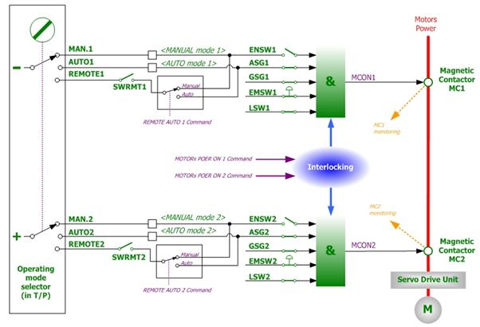
그림 1.82 모터전원 개폐에 대한 안전회로 개념도
모터ON을 시도하는 중 제어기 내부의 전자접촉기 MC1이 작동하는 소리가 들리지 않고 바로 “MSPR동작이상”이라는 메시지가 발생할 경우, 메인으로부터의 모터ON명령이 어떠한 이유로 인해 차단된 것입니다.
메인보드와 시스템보드간에 통신에러가 발생하면 시스템보드는 안전을 위하여 자체적으로 모터ON명령을 차단합니다. 일반적인 경우에는 메인보드도 통신에러를 동시에 감지하기 때문에 MSPR동작이상이나 MSHP동작이상을 발생시키지는 않습니다. 그러나 메인이 통신에러를 감지하지 못하는 경우 이 에러들이 발생할 수 있습니다. 즉, 각종 안전스위치류(예를 들어, 티칭펜던트 비상정지 스위치입력, OP패널 비상정지 스위치 입력 등)의 조작상태는 메인보드로 잘 입력되고 있으나, 메인보드로부터의 출력(모터ON)은 시스템에 전달되지 못하여 하드웨어적인 모터ON이 수행되지 못하는 경우 입니다.
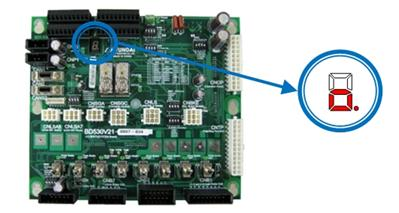
그림 1.83 통신에러 발생시 시스템보드의 7-SEG 표시
Ø 판단방법:
이러한 상황은 시스템보드의 7-세그먼트 표시를 보면 파악할 수 있습니다. 7-세그먼트는 현재 메인보드와의 통신이 비정상적이라는 표시로 “o.”를 표시합니다.
Ø 조치방법:
우선 제어기의 전원을 재투입하고 계속 같은 현상이 발생하는지 관찰하십시오. 똑같은 현상이 발생한다면 시스템보드의 통신입력 관련 부분의 고장이므로 시스템보드를 교환하십시오.
n CPUERR 또는 EXOUT신호 발생 또는 해당 라인의 결함
메인보드는 몇 가지의 시스템적 에러상황이 발생할 경우(정전, 서보에러 등) CPUERR 또는 EXOUT신호를 발생시킵니다. 이 신호는 시스템보드에 전달되어 하드웨어적으로 모터ON명령을 차단합니다. 안전을 위하여 모터의 전원을 즉각적으로 제거하는 것입니다. 하지만 비정상적으로 이 신호가 생성되어 모터ON을 방해할 수 있습니다.
Ø 판단방법:
이러한 상황은 시스템보드의 7-세그먼트 표시를 보면 파악할 수 있습니다. 7-세그먼트는 현재 시스템보드로 CPUERR가 입력되고 있다는 것을 “H.”으로 표시합니다. 또한 시스템보드 중앙 부근에 CPUERR, EXOUT이라는 LED를 통해서도 에러상황을 파악할 수 있습니다. 정상이라면 이들 LED는 점등상태이나 그렇지 않을 경우 소등상태가 됩니다.
그러나 이 신호가 아주 짧은 순간 간헐적으로 나타난다면 7-세그먼트와 LED를 통해서는 판단할 수 없습니다. 이러할 경우에는 DIP스위치 SW1을 이용하여 두 신호를 무시한 상태로 에러발생을 관찰해야 합니다. 신호를 무시하는 방법은 그림 6.91에서 보여지는 것과 같이 DIP스위치 SW1의 1번(CPUERR무시)과 2번(EXOUT무시) 핀을 ON시키면 됩니다. 이때 LED들은 모두 점등할 것입니다.
시스템을 재가동하여 에러가 사라진다면 이는 메인보드가 이들 신호를 생성하거나 CANS1커넥터/케이블의 이상입니다.
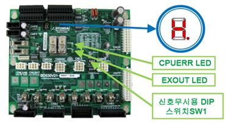
그림 1.84 CPUERR에러 발생시 시스템보드의 7-SEG, LED 표시
Ø 조치방법:
메인보드가 아무런 다른 에러표시 없이 이 신호를 생성하고 있다면 메인보드의 PLD버전을 확인하십시오. V0.7이상이 되어야 정상입니다. 메인보드 PLD버전이 정상일 경우 CANS1커넥터 및 케이블을 점검하십시오.
| 주의: DIP 스위치 SW1의 1번(CPUERR무시)와 2번(EXOUT)은 비상시 안전과 관련된 기능을 무시하는 것이므로, 시험에만 사용하시고 곧바로 원상복귀 하십시오. 무시한 상태로 사용한다면 안전과 관련한 문제를 야기할 수 있습니다. |
n 구형 시스템IO보드(BD531V10)를 원격모드에서 사용
구형 시스템IO보드(BD531V10)을 원격모드에서 사용할 경우 에러가 발생합니다. 이 보드는 원격모드 기능이 없기 때문에 원격모드에서 모터ON명령이 수행되지 않습니다.
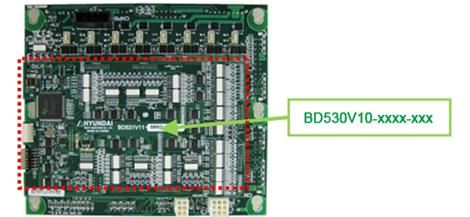
그림 1.85 구형 시스템IO보드(BD531V10)의 확인방법
Ø 판단방법:
시스템보드의 뒷면에 이 보드가 장착되어 있습니다. 시스템보드를 전장모듈에서 떼어내고 뒷면의 시스템IO보드 번호를 확인하십시오.
Ø 조치방법:
“BD531V10”보드가 장착되어 있을 경우에는 “BD531V11”보드 이상의 하드웨어 버전을 가진 보드와 교체하여 사용하십시오.
n 안전신호계통에 문제가 있는 경우
모터ON을 시도하는 중 제어기 내부의 전자접촉기 MC1이 작동하는 소리가 들리지 않고 바로 “MSPR동작이상”이라는 에러가 발생하며 다른 에러 메시지는 나타나지 않을 경우입니다.
앞에서 설명된 안전신호 계통에 문제가 있는 경우 모터ON 명령은 수행되지 않습니다. 안전장치(안전가드, 비상정지스위치 등)는 기계적으로 작동하는 장치이지만 이것의 모니터링은 전기적으로 작동됩니다. 따라서 안전장치의 고장, 배선을 타고 유입되는 전기적인 충격(노이즈, 서지), 배선오류, 접촉불량 등이 에러를 발생시킬 수 있습니다. 이를 확인하기 위해서는 현재 연결되어 있는 안전장치의 배선을 제거하고 입력을 무시하도록 다시 배선합니다.
| 주의 : 안전과 관련된 기능을 무시하는 것이므로, 시험에만 사용하시고 곧바로 원상복귀 하십시오. 무시한 상태로 사용한다면 안전과 관련한 문제를 야기할 수 있습니다. |
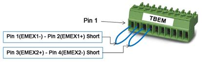
그림 1.86 외부비상정지 입력 무시방법
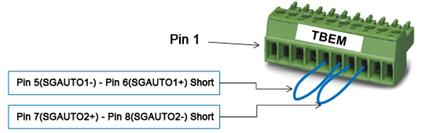
그림 1.87 자동안전가드 입력 무시방법
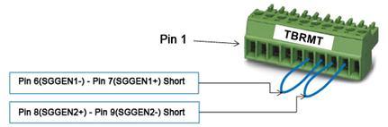
그림 1.88 일반안전가드 입력 무시방법
그림 1.89 P-COM입력 외부비상정지 무시방법(SW6의 3,4번 ON)
그림 1.90 P-COM입력 자동안전가드 무시방법(SW6의 1,2번 ON)
이렇게 안전장치 입력이 무시된 상태에서 에러현상이 제거된다면 설명된 것처럼 안전장치와 배선에 문제가 있는 것이니 이를 확인하십시오.
| 주의 : 안전과 관련된 기능을 무시하는 것이므로, 시험에만 사용하시고 곧바로 원상복귀 하십시오. 무시한 상태로 사용한다면 안전과 관련한 문제를 야기할 수 있습니다. |
n 안전관련장치 배선오류에 의한 에러발생
자동안전가드(AUTO SAFEGUARD) 등 안전과 관련된 장치들의 배선이 잘못되었을 경우 해당 안전신호의 이상을 검지하지 못하고 E0140(MSPR동작이상)을 발생시킬 수 있습니다. 수동모드 운전준비 대기 중에서(티칭펜던트의 모터ON 램프가 점멸하는 상태) 자동모드로 모드전환시, 자동모드에서 모터ON시도시에 에러가 발생합니다.
예를 들어, 자동안전가드의 배선이 잘못되었을 경우에 대하여 설명하겠습니다. 시스템보드(BD530)로 자동안전가드를 입력하는 방법은 접점입력과 P-common입력의 두 가지 방법을 제공하는데, 문제가 되는 것은 접점입력 형태의 배선오류입니다. 정상적인 배선은 각 안전체인 별로 분리하여 접점의 양단을 연결하는 것입니다. 그러나 체인의 배선이 섞여서 접속되면 제어기는 전기적인 오류로 인하여 안전가드의 이상을 검지하지 못합니다. 이때 모터ON을 시도하면 전자접촉기 구동용 안전릴레이를 동작시킬 충분한 전원이 공급되지 못하므로 E0140 (MSPR동작이상)이 발생합니다.
Ø 판단방법:
자동안전가드의 배선이 잘못 연결된 상태에서 나타나는 현상은 다음과 같습니다.
l 하나의 안전체인 연결을 제거하면(5번, 6번 배선 또는 7번, 8번 배선) 자동모드에서 안전가드 이상을 검지하고 E0043에러를 표시합니다.
l 그러나 체인 모두를 연결하면(5번, 6번, 7번, 8번 배선 모두 연결), 자동모드에서 안전가드 이상을 검지하지 못합니다(E0043에러를 발생시키지 않습니다).
따라서 이러한 현상이 나타나면 자동안전가드의 배선을 확인하십시오. 우선 터미널블록 TBEM을 보드에서 분리한 후 가드장치를 작동하면서 탈착된 터미널블록커넥터TBEM의 자동안전가드 입력단자에서 쇼트테스트를 시행하십시오.
l 가드장치를 닫으면(접점 CLOSE 상태)이면 5번-6번 단자가 쇼트될 것입니다. 또한 7번-8번 단자도 쇼트될 것입니다.
l 반대로 가드장치를 열면(접점 OPEN 상태) 5번-6번 단자는 오픈될 것입니다. 또한 7번-8번 단자도 오픈 상태이어야 합니다.
그림 1.91 정상적인 자동안전가드(AUTO SAFEGUARD)의 배선
그림 1.92 잘못된 자동안전가드(AUTO SAFEGUARD)의 배선
Ø 조치방법: 자동안전가드의 배선을 올바르게 수정하십시오.
이상과 같이 자동안전가드의 배선오류에 의한 에러발생에 대하여 설명하였습니다. 이는 접점입력을 갖는 모든 안전관련 신호(일반안전가드, 자동안전가드, 외부비상정지스위치, 각종 리밋스위치들)에 대해서도 동일한 현상을 나타내므로 각각에 대한 정상적인 배선과 잘못된 배선을 비교 참조하십시오.
표 1-7 안전관련장치의 배선오류
|
구분 |
정상적인 배선 |
잘못된 배선 |
|
외부 비상정지 스위치 |
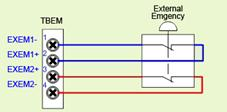 |
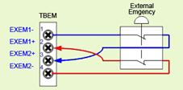 |
|
자동 안전가드 |
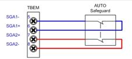 |
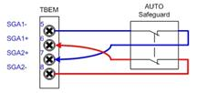 |
|
일반 안전가드 |
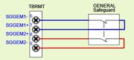 |
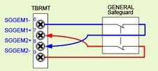 |
n 시스템보드의 고장
모터ON을 시도하였을 경우 제어기 내부의 전자접촉기 MC1이 작동하는 소리가 들리지 않고 바로 “MSPR동작이상”이라는 메시지가 발생할 경우, 상기의 모든 점검에도 이상부분이 발견되지 않고 똑같은 에러가 계속 발생한다면 시스템보드 자체의 고장일 수 있습니다. 시스템보드를 교체하십시오.
(2) 감시계통의 고장
모터ON을 시도하는 중 제어기 내부의 전자접촉기가 작동하는 소리가 들리고 바로 “MSPR동작이상”이나 “MSHP 동작이상”이라는 메시지가 발생할 경우, 감시계통의 고장일 수 있습니다. 감시계통의 고장을 확인하기 위해서는 다음과 같은 방법을 사용합니다.
전자접촉기 MC1과 MC2의 상태는 보조접점을 이용하여 감시하며 티칭펜던트를 통하여 확인할 수 있습니다. 티칭펜던트에서 전용입력신호 모니터링 창을 띄우면 “MC1(PreCharge)”와 “MC2(Motors Power)”라는 신호를 볼 수 있습니다. 모터OFF 상태에서는 백색배경으로 표시되고, 모터ON시에는 황색배경으로 표시됩니다.
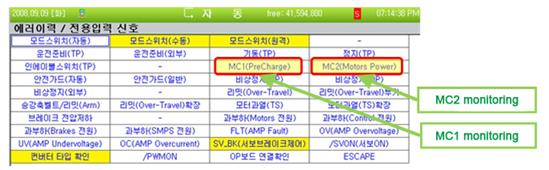
그림 1.93 전자접촉기 모니터링 방법
자동 또는 수동모드에서 모터ON을 시도하면서 전자접촉기의 작동소리와 함께 MC1, MC2의 표시상태를 확인하십시오.
n 처음 전자접촉기의 동작음과 함께 MC1이 잠깐 동안 황색으로 표시되면서 E0140(MSPR동작이상)이라는 에러메시지가 나타나면 MC1의 보조접점과 모니터링 계통에는 이상이 없는 것입니다.
n MC1이 동작하고 난 후 두 번째 전자접촉기의 동작음과 함께 MC2가 잠깐 동안 황색으로 표시되면서 E0127(MSHP 동작이상)이라는 에러메시지가 나타나면 MC2 의 보조접점과 모니터링 계통에는 이상이 없는 것입니다.
만약, 위와 같은 방법을 통해 MC1또는 MC2가 제대로 모니터링이 되지 않는다는 것이 확인되었다면(전자접촉기 작동음이 들리는데도 불구하고 모니터링신호가 황색으로 표시되지 않을 경우), 다음과 같이 감시계통에 있는 장치들의 고장을 확인해야 합니다.
① 케이블 CNMC
② 전장모듈 내부의 전장보드 릴레이 SR1, SR2
③ 전장모듈 내부의 전자접촉기 MC1과 MC2의 보조접점
④ 전장모듈 내부의 전장보드와 전자접촉기 간의 배선
⑤ 시스템보드(입력신호처리부)
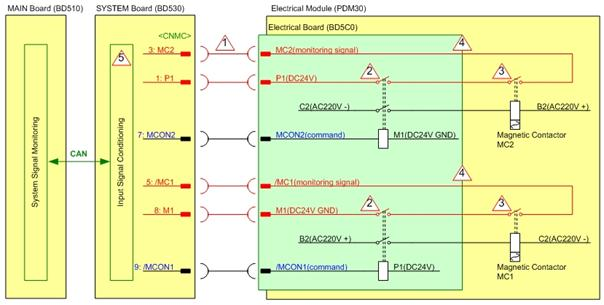
그림 1.94 전자접촉기 모니터링 계통도
n 케이블링(전선, 커넥터 등) 고장
전자접촉기가 설치되어 있는 전장모듈(PSM or PDM)과 모니터링 신호를 수집하는 시스템보드(BD530) 간의 케이블링을 확인합니다. 케이블 이름은 CNMC이며 시스템보드 상단 뒷면을 통하여 전장모듈로 들어 갑니다. 이 케이블의 커넥터 접속상태를 점검하십시오.
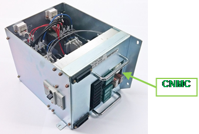
(a) Hi5a-S 제어기
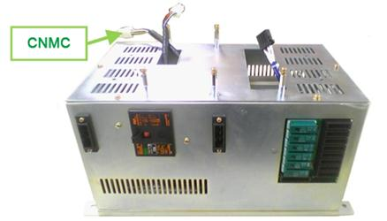
(b) Hi5a-N 제어기
그림 1.95 전장모듈의 CNMC 케이블
n 전장모듈의 고장
전자접촉기의 모니터링 신호는 전장모듈 내부의 여러 가지 장치들을 통하여 시스템보드에 전달됩니다. 따라서 이들 장치들 중 하나라도 고장이 발생하면 전자접촉기가 동작해도 메인은 이 상태를 감지하지 못합니다. 전장모듈의 내부의 고장은 전장보드(BD5C2 or BD5C0), 전자접촉기(MC1, MC2), 전장보드와 전자접촉기 간의 배선으로 크게 구분할 수 있습니다. 그러나 이미 로봇이 설치된 현장에서 전장모듈 내부를 점검하는 것은 어려우므로 전장모듈을 교체하여 주십시오.
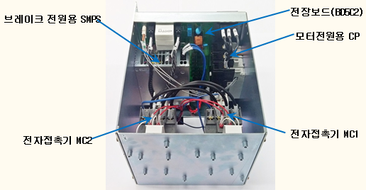
(a) Hi5a-S 제어기
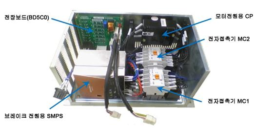
(b) Hi5a-N 제어기
그림 1.96 전장모듈 내부구조
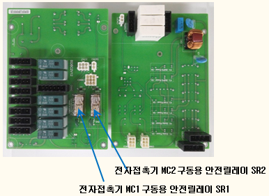
(a) Hi5a-S 제어기 (BD5C2)
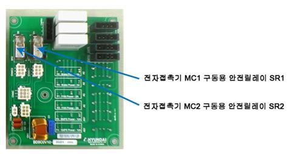
(b) Hi5a-N 제어기 (BD5C0)
그림 1.97 전장보드
n 시스템보드의 고장
시스템보드 내부에 있는 입력신호처리부의 고장도 에러발생의 원인이 될 수 있습니다. 시스템보드를 교체하여 확인하십시오.
(3) 기타 고장
n E0043과 E0140이 동시에 발생하는 경우
수동모드 운전준비 대기 중에서(티칭펜던트의 모터ON 램프가 점멸하는 상태) 자동모드로 모드전환을 하면 E0043(안전플러그 또는 Light Curtain)과 동반하여 E0140 (MSPR동작이상)이 나타날 수 있습니다. 이것은 메인 소프트웨어 버전 V30.07-00하위의 버전에서 자동안전가드(AUTO SAFEGUARD)가 열려있을 때 모터ON을 시도하면 발생합니다. 티칭펜던트를 통하여 메인 소프트웨어 버전을 확인하고 하위 버전이라면 버전업 하십시오.